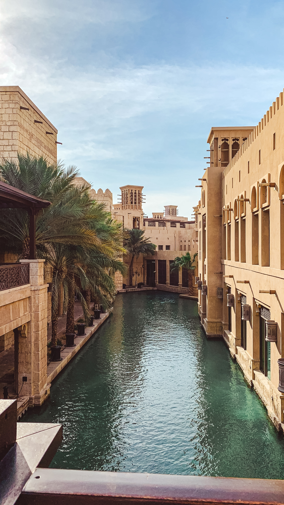
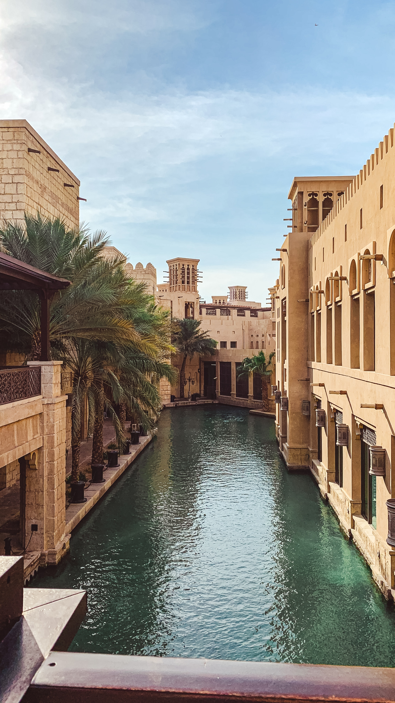

Despite its reputation for luxury and excess, Dubai also has a rich cultural heritage that is evident in its
historic neighborhoods and traditional souks, where visitors can wander through winding streets and haggle for
treasures like gold jewelry and Arabian spices. The city's Jumeirah Mosque is a stunning example of Islamic
architecture, and visitors of all faiths are welcome to learn about the history and customs of Islam on a guided tour.
Dubai's bustling nightlife scene is another attraction, with glamorous clubs, rooftop bars, and beachfront
lounges offering endless entertainment options. And for those seeking adventure, Dubai offers a range of
thrilling experiences, from indoor skiing at Ski Dubai to skydiving over the Palm Jumeirah.

 
